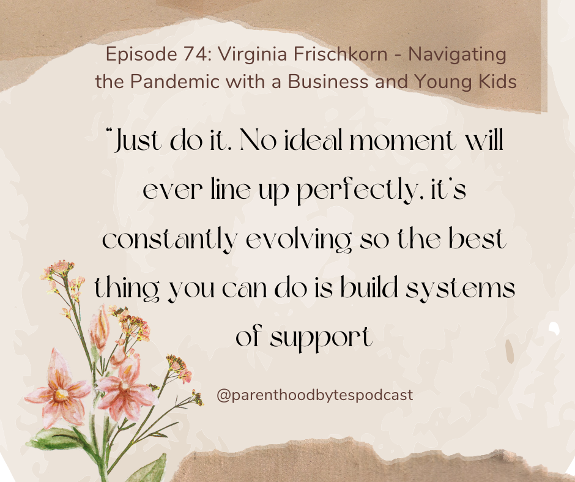

Episode 74: Virginia Frischkorn - Navigating the Pandemic with a Business and Young Kids

Episode Notes
In this episode, we welcome back Virginia Frischkorn, founder and CEO of Partytrick, to delve into her experience navigating the pandemic while raising two young children, now 8 and 10, and how her business has evolved. She talks to us about the practical tools she implemented to manage stress, including mindfulness techniques and time-saving strategies. Virginia also emphasizes the importance of cultivating gratitude, even for the smallest daily moments, and how these practices provided essential support during challenging times.
üéß Catch up on last week's episode to hear Virginia's story of building her business after becoming a mother, and her tips for work-life balance and self-care.
üí° For your next corporate event, celebration, or milestone moment, check out Partytrick! You can also find them on Instagram, TikTok and LinkedIn.
✉️ Please reach out to me at chiao@parenthoodbytes.co if you'd like to be a guest on the podcast or if there is a specific topic that you would like to hear being discussed.
✨ Interested in sponsoring an episode? ➡️ Email me at chiao@parenthoodbytes.co!